Lecture 6: Validation and the Bias-Variance Tradeoff
MSE 125 — Applied Statistics
Wednesday, April 15, 2026
the vendor promised high accuracy
the model missed 67% of cases
The hook. Epic Systems sells an AI sepsis prediction model to a hospital. The vendor promises high accuracy. The hospital deploys it. An independent team at Michigan Medicine evaluates on 27,697 patients — it missed 67% of sepsis cases while firing false alarms on 18% of all patients. Jump right in — no preamble.
the epic sepsis model
67%
of sepsis cases missed
18%
of all hospitalizations got a false alarm
independent evaluation on 27,697 patients at Michigan Medicine
Wong et al., “External Validation of a Widely Implemented Proprietary Sepsis Prediction Model,” JAMA Internal Medicine , 2021
Pause on the numbers. The vendor reported strong performance on their internal evaluation data. Independent evaluation found the model barely better than random: it missed two out of every three real sepsis cases, and one in six patients who never had sepsis got a false alarm. The model drowned nurses in alarms for patients who were fine and silently failed on the ones who weren’t. This is not a toy example — this sepsis tool is deployed in hundreds of hospitals. The root cause: they evaluated on data similar to the training data, not on an independent test set.
not an isolated failure
dermatology AI
90%+ accuracy on light skin
as low as 17% on dark skin
test set didn’t match deployment population
Amazon hiring tool
high accuracy on historical data
systematically penalized “women’s”
the model replicated historical bias
Epic and the dermatology AI failed by evaluating on data too similar to training
Amazon failed differently: training labels encoded historical discrimination — test R² would look fine; the labels were the problem
Two more examples to establish the pattern. The dermatology AI and the Amazon hiring tool both reported strong performance on their training-like data and failed on the data that actually mattered. The common thread is that the evaluation didn’t test what the stakeholders needed to know: will this model work on NEW data, from a DIFFERENT population, in the FUTURE?
today
train/test split : honest evaluation on new databias-variance : why more isn’t always bettertrain/validate/test : choosing complexity fairlyregularization : lasso and ridge
Four blocks. First: the idea that you can’t grade a model on its homework. Second: why complex models can fail spectacularly. Third: how to choose model complexity without contaminating the test set. Fourth: how to tame complexity automatically. The Airbnb dataset from Chapter 5 runs through all four blocks.
training R² is not enough
Section break. In Chapter 5 we celebrated each R² improvement as we added features. Today we find out that training R² lies.
the problem with training R²
training \(R^2\) measures how well the model memorizes the data
adding features always improves training \(R^2\)
but does it improve predictions on new data ?
This is the core tension of the lecture. Training R² is monotonically non-decreasing in the number of features (for OLS on nested feature sets). So it can’t tell you when you’ve gone too far. We need a different metric — one that simulates deployment.
polynomials, when they help
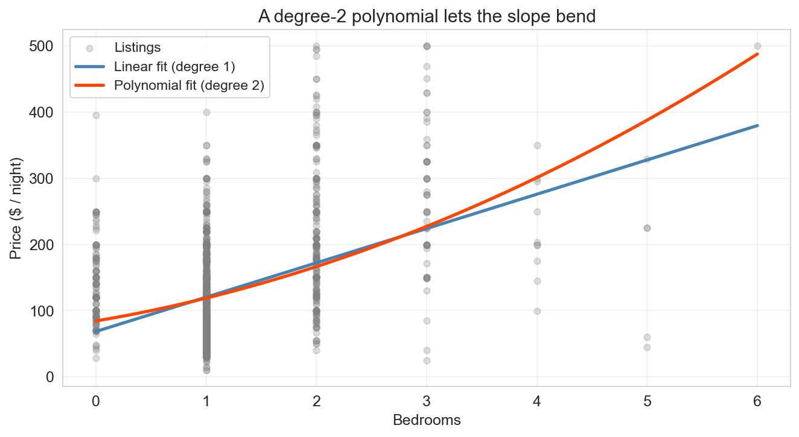
polynomials let the slope bend — without leaving linear regression
Motivation for polynomials. The chapter-5 model fit one slope per feature — a straight line through bedrooms → price. But the jump from a 1-bedroom to a 2-bedroom isn’t the same as the jump from 4 to 5, and the straight line can’t see that curvature. A degree-2 polynomial adds one column (\(x^2\) ) and lets OLS pick its own coefficients. Still linear in the coefficients , so we fit it the same way. The straight line and the curve agree at small bedroom counts and diverge as the slope bends upward. This is the setup for today’s real question: if a little curvature helps, does more always help?
polynomial regression: still a linear model
\[\widehat{y} = \beta_0 + \beta_1 x + \beta_2 x^2 + \beta_3 x^3\]
nonlinear in \(x\)
linear in \((\beta_0, \beta_1, \beta_2, \beta_3)\) just more columns in \(X\)
= 3 , include_bias= False ).fit_transform(X)
One step of formalism. Polynomial regression is still linear regression — the new columns (\(x^2\) , \(x^3\) , …) are just computed from the raw data. Every extra power adds one dimension to the span. Each extra power lets the curve bend once more. The obvious question: if degree 2 beat degree 1, does degree 6 beat degree 2? Training R² says yes. The rest of the lecture says not so fast.
push the degree: the polynomial parade
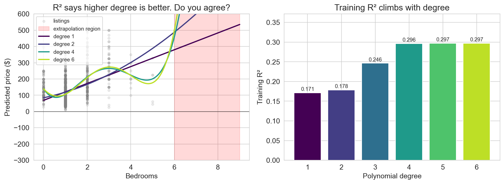
training \(R^2\) climbs: 0.17 → 0.30 from degree 1 to 6
Before saying anything: point at the left panel and walk the polynomials up. Degree 1 is the line. Degree 2 is the gentle bend. Degree 4 is doing something spicier. Degree 6 is the bright lime curve that swings wildly once you cross past the observed bedroom counts into the red shaded region. Meanwhile on the right panel — training R² keeps climbing. 0.17, 0.18, 0.25, 0.30, 0.30, 0.30. Every degree buys “a little more fit.” This is the setup for the next slide: lead colloquially.
would you trust this?
it fits the data better and better!
…wait, is something wrong?
would you trust this model to predict a 7-bedroom listing?
training \(R^2\) says yes . your eye says no .
This is the colloquial pivot. Lead with celebration — “what a great fit, let’s ship it.” Then the pause. Then the honest question: would you actually trust the degree-6 curve to predict a 7-bedroom listing? Point back at the previous slide — the curve swings into territory no honest prediction should enter. Even inside the observed range, the high-degree curves are wobbling between points, chasing patterns that aren’t there. Training R² and your intuition are pointing in opposite directions. The rest of the lecture is about resolving that disagreement with tools that grade the model on data it has never seen.
the fix: hold out test data
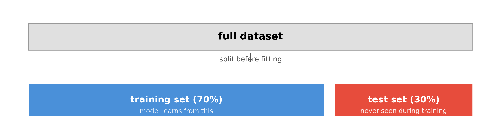
test \(R^2\) can go down when the model overfits
The key idea: split before looking at any results. The test set is a time capsule — the model never sees it during training. If the model memorizes noise in the training data, that noise won’t be present in the test data, and test R² will suffer.
how much to hold out?
common defaults: 70/30 or 80/20 train/test
the tradeoff:
more training data → model learns more reliablymore test data → performance estimate is more stable
with abundant data (tens of thousands), the split matters less
with small data (hundreds), cross-validation (coming up next) is better than a single split
Practical guidance. With 50,000 observations, even 10% held out gives 5,000 test points — plenty for a stable estimate. With 500 observations, a 70/30 split gives only 150 test points. Cross-validation, which we’ll introduce later, gives a more stable estimate by rotating which data is held out.
train R² vs test R²
train \(R^2\) : computed on the data used to fit the model
measures how well the model explains what it has seen
always increases (or stays the same) with more features
test \(R^2\) : computed on held-out data
measures how well the model predicts new observations
can decrease if the model overfits
the gap between them reveals overfitting
Formal definitions. The same logic applies to any metric — accuracy, MSE, anything. The train version measures fit; the test version measures generalization. The gap is the diagnostic signal. Big gap = overfitting. Small gap = the model generalizes well.
seven levels of model complexity
1,500 Airbnb listings , 60/40 train/test split
1
bedrooms + bathrooms
2
2
+ room type dummies
4
3
+ borough dummies
8
4
+ bedroom × borough interactions
12
5
all degree-2 terms
44
6
all degree-3 terms
164
7
all degree-4 terms
494
Q: which level will have the best test \(R^2\) ?
raise your hand: level 1? · 3? · 5? · 7?
Same base features from Chapter 5, but now we extend with polynomial interactions. Levels 5-7 use PolynomialFeatures — all products of up to d features, including a feature with itself (so degree-2 includes squared terms, degree-3 includes cubic terms). The feature count grows combinatorially. We use 1,500 listings so that even Level 7 has fewer features (494) than training observations (900) — we want to see overfitting within the OLS regime, not hit the p > n cliff.
DISCUSSION (1 min, poll): Before revealing, ask students to commit: “which level will win on test R²?” Level 3? 5? 7? Hands up. Then pivot to the reveal slide.
the reveal: train vs test R²
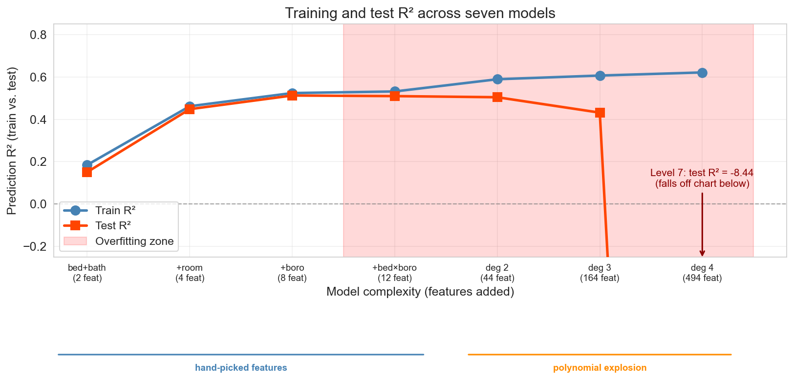
x-axis splits into two regimes : levels 1–4 hand-picked features · levels 5–7 polynomial explosion
can test \(R^2\) be negative? yes — level 7 scores \(\approx -8.4\) , far worse than predicting the mean
Walk through the three phases. Phase 1 (levels 1-3): both lines climb — adding room type and borough captures real signal. Phase 2 (levels 4-5): diminishing returns, the gap opens. Phase 3 (levels 6-7): overfitting — train R² keeps creeping up while test R² plummets. At level 7 the single-split test R² is about -8.4 (falls off the bottom of the chart). The blue bar under levels 1-4 marks the hand-picked regime; the orange bar under levels 5-7 marks the polynomial explosion — same plot, two different kinds of complexity. 494 features is still less than 900 training observations, so OLS is well-defined; we’re seeing honest overfitting, not a p > n cliff.
Sidebar on negative R²: on training data with intercept, R² ∈ [0, 1]. On test data, no such guarantee — negative R² means your predictions are farther from truth than just predicting the overall mean. Level 7’s -8.4 makes the point vividly. The formula (1 − residual norm / centered-response norm) is in the book for students who want it.
level 7 scored test R² ≈ −8.4
what went wrong — and what would you try to fix it?
30 seconds: think
60 seconds: discuss with a neighbor
would you add more data, remove features, or try something else?
DISCUSSION: Diagnose and fix (3 min) This breaks up the long Block 1 monologue. Students have just seen the 7-level reveal — they know that overfitting happened but haven’t yet learned the vocabulary (bias, variance) or the formal fixes. The point is to surface their intuitions before we name them. Common answers: “use fewer features” (correct — reduce complexity), “get more data” (correct — reduce variance), “stop at level 3” (correct instinct, but how do you know in advance?). All three answers foreshadow the rest of the lecture. Don’t resolve — just collect answers and say “we’ll formalize all three of those.”
“With four parameters I can fit an elephant, and with five I can make him wiggle his trunk.”
— John von Neumann
level 7 packs in 494 features — enough to chase noise no honest pattern supports
the test set exposes it
The von Neumann quote lands perfectly here. The level-7 model packs in 494 features (fewer than 900 training observations, so OLS is well-defined), chasing noise the real signal never contained. The test set exposes it — test R² collapses to -8.4.
what this split can and cannot detect
a random train/test split tests: new data from the same distribution
it cannot detect population shift — it only tests generalization within the training distribution
Epic trained on one hospital system, deployed at another
a random split within one hospital would have looked fine
Important clarification. A random train/test split simulates “new patients from the same hospital, same era.” It cannot detect covariate shift across hospitals or temporal shift. For that, you need an external test set drawn from the deployment population. Chapter 16 returns to this with time-series validation.
distribution shift
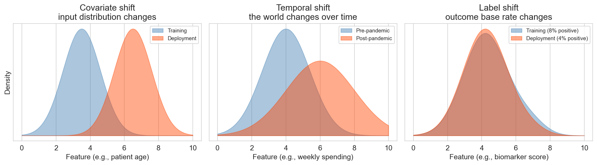
covariate shift
where?
Epic sepsis: one hospital → another
temporal shift
when?
pre-COVID traffic model → March 2020
label shift
whom?
cancer screen: referral clinic (5%) → routine (0.3%)
random train/test splits see none of these
Students are responsible for these three definitions on the quiz. Concrete examples for each:
Covariate shift — where? Epic sepsis model trained at one hospital system, deployed at another. Patient demographics, coding practices, lab instruments all differ. Random split within the training hospital would have looked fine; deployment across the shift is where it failed.
Temporal shift — when? Any model trained on pre-COVID data and deployed in March 2020. Traffic models, retail forecasts, credit risk — consumer behavior changed overnight. ‘The past is no longer like the future’ is the hardest shift to plan for.
Label shift — whom? A cancer screening model trained at a specialty referral clinic (where base rate is 5% because patients were already pre-selected by their primary care doctor) and deployed in routine primary-care screening (where base rate is 0.3% because anyone who walks in gets screened). The feature distributions look similar, but the base rate has shifted, so a decision threshold tuned to the old prevalence produces catastrophically many false alarms in the new regime.
The three questions — when, where, whom — are a practical diagnostic checklist. Ask them before deploying any model.
the data-generating model
if we trained on a different 900 listings , would we get the same model?
we assume each observation is generated as
\[y = f(x) + \varepsilon, \qquad \varepsilon \sim N(0, \sigma^2)\]
\(f(x)\) — the signal (the true relationship)\(\varepsilon\) — noise (mean zero, variance \(\sigma^2\) )\(\hat{f}(x)\) — the model’s prediction (fit on a training set)
\(\sigma^2\) is the irreducible noise floor — no model can beat it
(the decomposition holds for any mean-zero noise; Gaussian here for concreteness)
Before we can decompose error, we need a model of how the world generates the outcome. Every observation is signal plus independent Gaussian noise. The model’s job is to learn \(f\) from a noisy training set \(\mathcal{D}\) . The fitted prediction function \(\hat{f}_{\mathcal{D}}\) depends on which particular \(\mathcal{D}\) we drew — this is the source of variance. And \(\sigma^2\) sets the noise floor that even a perfect model can never beat. Keep the three symbols on screen; they show up in every formula in this section.
seeing bias and variance
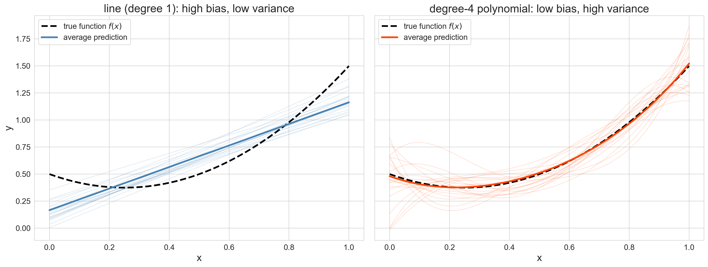
what differs between the left and right panels?
Pause here. Let students look at the two panels for 15-20 seconds before saying anything. Left: 20 linear fits cluster tightly (low variance) but systematically miss the curvature (high bias). Right: 20 degree-4 polynomial fits scatter widely (high variance) but their average tracks the truth (low bias). Ask one or two students to describe what they see before you name it. The predict-then-label sequence makes the definitions stick.
the definitions
bias — average prediction misses the truth
\[\text{bias}(x) = \mathbb{E}[\hat{f}(x)] - f(x)\]
variance — predictions scatter around their average
\[\text{var}(x) = \mathbb{E}\!\left[(\hat{f}(x) - \mathbb{E}[\hat{f}(x)])^2\right]\]
\[\text{MSE}(x) = \text{bias}(x)^2 + \text{var}(x) + \sigma^2\]
at a fixed test point \(x\) , averaging over training sets
Ground each definition in the picture students just described. “Left panel clusters tight — that’s low variance. But the cluster is in the wrong place — that’s high bias. The formula is just the distance between the average prediction and the truth.” Then variance: “Right panel scatters — the spread of those curves IS variance.” The MSE decomposition is exact for squared error at any fixed x. σ² is the same noise floor from the data-generating model slide — even a perfect model can’t reduce it.
the bias-variance tradeoff
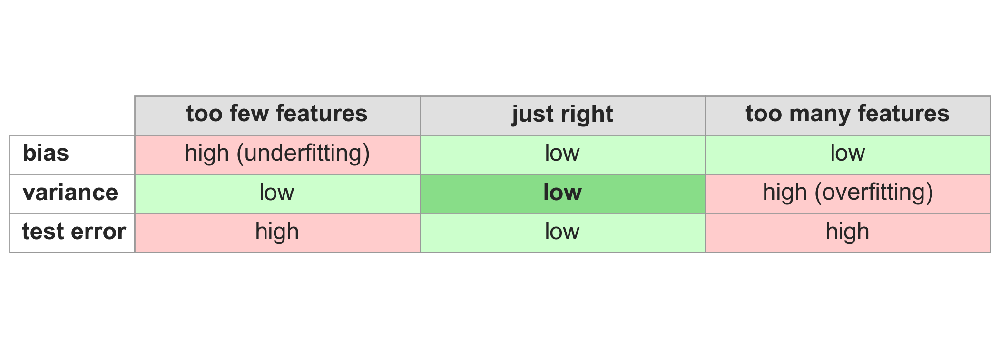
The organizing framework. Too few features: the model can’t capture the real pattern (high bias, underfitting). Too many: the model is too sensitive to the particular training data (high variance, overfitting). The sweet spot minimizes both.
you can only measure bias and variance on simulated data
both definitions are expectations over training sets — you need many independent draws from the same distribution
real data gives you one training set and one fit — no way to average
also: bias compares \(\hat{f}\) to \(f(x)\) — the true function — which we don’t know on real data
on real data we read symptoms — train-test gaps, CV curves — not the quantities themselves
This is the single most misunderstood point in the section. The bias-variance decomposition is a conceptual framework everywhere (it explains why test error is U-shaped). It is a measurable framework only on synthetic data where we know f and σ and can draw as many training sets as we want. Everything else in the chapter — the 7-level experiment, CV curves, train-test gaps — gives us diagnostic symptoms of bias or variance, not the quantities themselves. The earlier overlay plot was only possible because we handed ourselves a known f. Drive this home; it’s a common quiz miss.
sketch the U-curve
you know bias decreases with complexity and variance increases
sketch what happens to total test error (bias² + variance + σ²) as complexity grows
30 seconds: sketch on paper or in your head
what shape is the total-error curve? does it have a minimum?
DISCUSSION: Predict-then-reveal (2 min) Prompt: “You know bias falls and variance rises. What does their sum look like?” Format: 30 sec individual sketch, then reveal the U-curve on the next slide. Most students will correctly predict a U shape. The ones who don’t will learn more from being wrong. Either way, committing to a prediction before the reveal makes the U-curve stick. If students ask about σ²: “it’s a constant floor — shifts the curve up but doesn’t change the shape.”
the U-curve
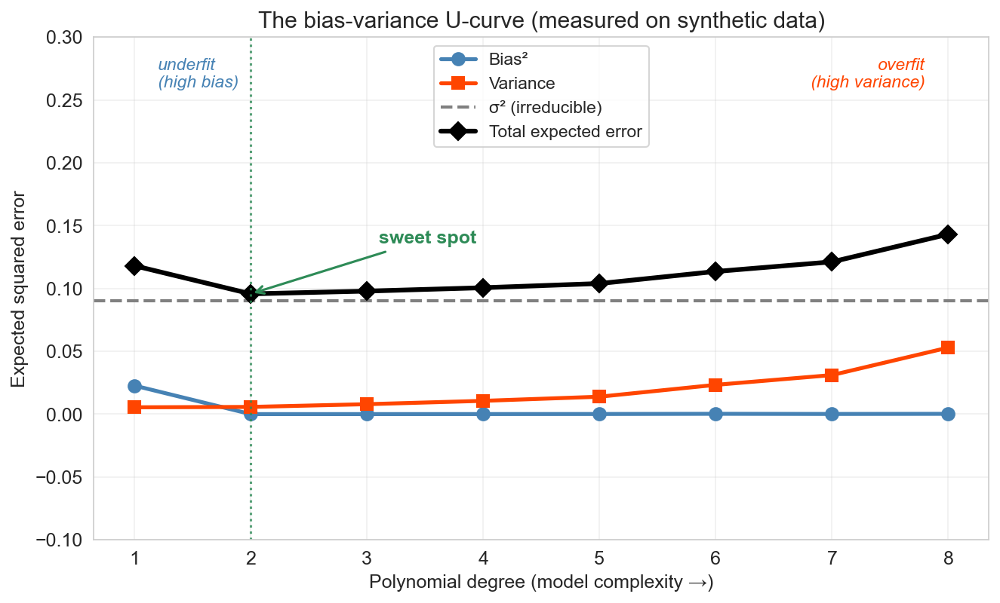
every point is simulated — 200 Monte Carlo training sets per degree
forward : random forests (ch 13) show a flat test-error curve — more trees never hurts. we’ll see why then.
The canonical bias-variance figure — now with real numbers, not hand-drawn curves. The same 200-training-set Monte Carlo we ran for the line and degree-4 fits, run at every degree from 1 to 8. Move left-to-right along model complexity. Bias² (blue) starts high — simple models can’t capture the pattern — and falls as flexibility grows. Variance (orange) starts near zero and rises — flexible models start chasing noise. Their sum (the total expected error, in black) is U-shaped: it falls while bias² dominates, hits a minimum at the sweet spot, then rises as variance takes over. Even the best model can never drop below σ² (the gray dashed floor) — that’s the irreducible noise from \(y = f(x) + \varepsilon\) . Every complexity knob we’ve seen — number of features, polynomial degree, lasso α — is a different axis on this same curve. Cross-validation is how we find the valley.
Honest footnote: the U-curve is the right story for a single unregularized model fit. It is NOT the end of the story. Averaging many overfit models — if their errors are uncorrelated — reduces variance without increasing bias, and can escape the classical tradeoff entirely. This is the only known escape. We’ll see it concretely in Chapter 13 (random forests): as you add more trees, test error goes down and then plateaus, never back up. Flag this as a forward promise so “more is sometimes better” doesn’t feel like a contradiction when students meet forests.
mapping it back to the experiment
1
low
low
high bias (underfitting)
3-5
moderate
moderate
sweet spot
6-7
high
negative
high variance (overfitting)
low training \(R^2\) → high bias
large train-test gap → high variance
Map the abstract framework onto the concrete numbers students just saw. Level 1 can’t capture the patterns in the data (high bias). Levels 6-7 start chasing noise: training R² keeps climbing while test R² plunges — at level 7 it’s about -8.4, far below the “predict the mean” baseline. Levels 3-5 balance both. The diagnostic rules: low training R² signals bias; a large gap between training and test R² signals variance.
underfit? overfit? the fix is mechanical
low train R², close test R²
high bias (underfit)add features, use a more flexible model
high train R², low test R²
high variance (overfit)reduce features · regularize · add more data
both high, close
sweet spot
nothing to fix
both low, close
high bias and high noise
check data quality
“reduce features” and “add features” we just walked through — levels 1-7
what about add more data ?
Concrete diagnostic → fix table. First two rows are the common cases — low train R² is bias, big train-test gap is variance. Third row is the goal. Fourth row is a common real-world trap where nothing is working because the signal itself is weak. The add-features and reduce-features levers are already on the 7-level plot — levels 1→3 is “add features to fix underfit”, levels 7→4 is “reduce features to fix overfit”. The lever we haven’t demonstrated is add more data — same model, same features, more rows. Next slide.
more data cures overfitting
level 6 — 164 polynomial features, catastrophic at 900 training rows (60% of 1,500)
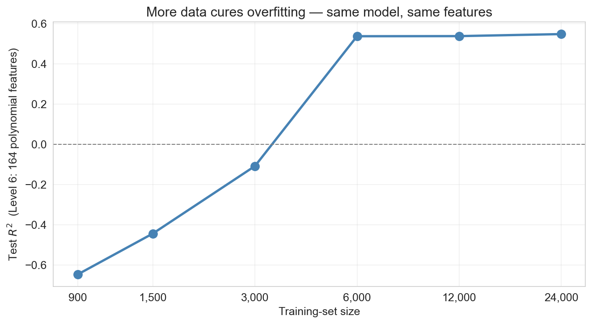
same features, same model, just more rows
variance shrinks as the training set grows — bias does not
Level 6 was the catastrophic-overfit case on 900 training observations — test R² far below zero. Walk left-to-right along the curve: each doubling of the training set, the ‘chase noise’ failure mode weakens. By tens of thousands of rows, the same 164-feature model is competitive with the sweet-spot models at 1,500 rows. The deep point: more data is a variance lever, not a bias lever. A linear model through curved signal stays biased no matter how many rows you throw at it — you need to enrich the feature set (or change model class) to fix bias. But if your model is overfit and you can get more data, more data is usually the strongest single lever available.
your friend shows you a model with training R² = 0.98 and test R² = 0.42
what’s the diagnosis? what would you recommend?
think for 30 seconds
turn to your neighbor for 90 seconds
what’s wrong, and how would you fix it?
DISCUSSION: Think-pair-share (4 min) Prompt: “Training R² = 0.98, test R² = 0.42. Diagnosis?” If stuck: “Is the train-test gap large or small? What does that tell you?” Key insight: The large gap (0.98 vs 0.42) signals HIGH VARIANCE — the model is overfitting. Recommendations: reduce features, add regularization, get more data, or use cross-validation to find the right complexity. This is NOT a bias problem (training R² is high, so the model CAN fit the data).
why not just two sets?
we used the test set to compare seven models and picked the best
but that means our “test” performance is optimistic
we’ve implicitly fit a decision (which model to deploy) to the test data
The more models you compare on the same test set, the more likely you are to pick one that got lucky on that particular split. The reported “test” R² is no longer an honest estimate of future performance.
think of it like studying for an exam
training = the textbook (study from it)validation = a practice exam (if you do badly, change your approach)test = the final (take it once, that score counts)
take the final three times, report the highest — no longer a fair estimate of what you know
Analogy from the chapter: training data is the textbook you study from. Validation data is a practice exam you take while you still have time to change your approach. Test data is the final — you walk in, take it once, and whatever score you earn is the one that counts. If you were allowed to take the final three times and report the highest, it wouldn’t be a fair estimate of what you know. That’s exactly what happens when you reuse a test set to pick a model. The analogy is sticky and helps students remember why the three-way split matters.
the three-way split
training — the data the model learns fromvalidation — held-out data used to choose model complexitytest — touched only once , at the very end
common split: 60% train / 20% validate / 20% test
the test set stays pristine — no decisions depend on it
The solution: add a middle layer. Train on the training set. Compare models on the validation set. Report the winner’s performance on the test set — which the model (and the modeler) has never seen. If we use the test set for model selection, we contaminate it. A dedicated validation set absorbs the cost of selection.
the workflow
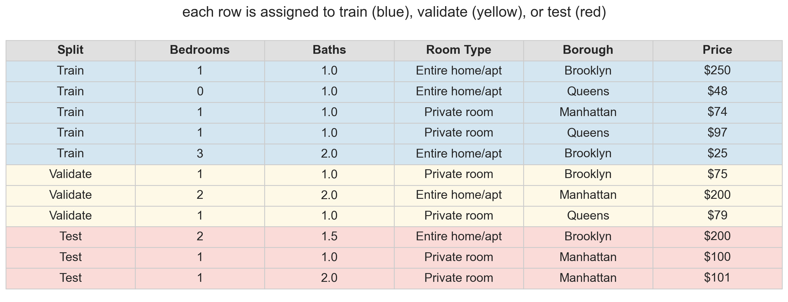
fit each model on blue rows (train)
evaluate on yellow rows (validation) — pick the best
report winner’s performance on red rows (test)
Walk through the three steps. The key discipline: the red rows are never touched until the very end.
cross-validation: rotate the held-out fold
single train/test split is noisy — might get lucky or unlucky
every observation plays validator exactly once
The fix for noisy single splits. Split the data into 5 equal-sized folds. At iteration k, fold k is the held-out validation set; train on the other four. Walk across each row: fold 1 is held out, then fold 2, then fold 3, and so on. Each row yields one score (score_1 through score_5), and we average them. Averaging over 5 folds typically reduces the noise of any single split. More stable than any single split — and every observation contributes to both training and testing.
CV confirms the pattern
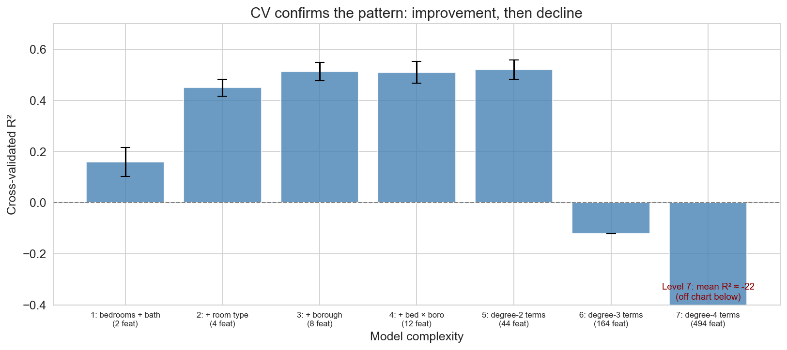
error bars overlap for levels 3-5 — gains from interactions are modest
CV across all seven complexity levels. The y-axis is clipped so levels 1-5 are readable; levels 6 and 7 are catastrophic (level 6 around -0.12, level 7 around -22) — level 7’s off-chart collapse is annotated at the bottom. CV confirms what the single split showed: performance improves through the first few levels, then declines. Overlapping error bars across levels 3-5 tell us the differences are within noise — these models are effectively tied.
why CV beats a single split
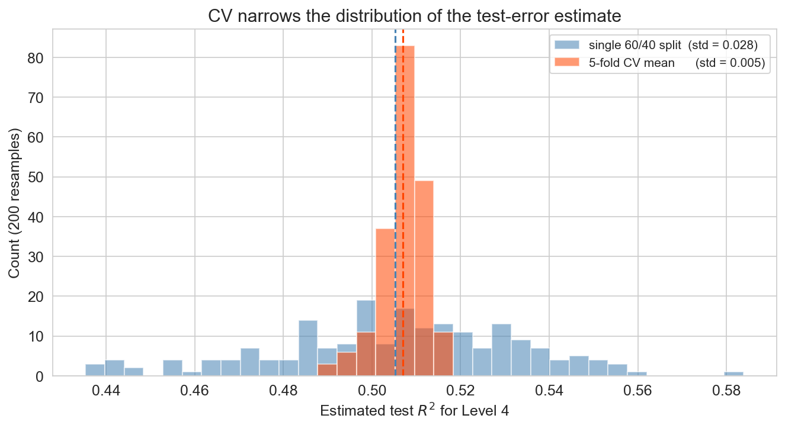
200 random seeds, same model (level 4) · orange = CV, blue = single split
same mean , much narrower spread — CV reduces the variance of the estimate
so when you compare levels 3, 4, 5: CV tells them apart; a single split often can’t
The key “why do we bother with CV” slide. Both estimators are unbiased (blue and orange are centered on roughly the same R²), but the 5-fold CV mean has roughly one-third the standard deviation of a single 60/40 split. That’s the whole point: CV doesn’t move the bullseye, it tightens the group. And the payoff is model selection : when two candidate models sit within 0.05 R² of each other, a noisy estimator can rank them wrong on any given draw; a tight estimator gets the ranking right. Build up: the picture first, then “same mean, much narrower spread”, then why that matters for choosing a model.
leave-one-out CV
\(k = n\) folds: every observation is its own held-out fold
each fit uses \(n - 1\) training points — almost the full dataset
when to use it : small \(n\) (say, \(n < 200\) — a 50-patient clinical trial, a startup’s first revenue dataset)
when not to : larger \(n\) — 5- or 10-fold CV is faster and nearly identical
going deeper : approximate LOO-CV (Broderick et al., AISTATS 2019) gives near-LOO accuracy from a single fit
LOO is k-fold taken to the limit — each observation is its own fold. It’s approximately unbiased for the test error of the final model (which will be deployed on all the data). The practical cost: n refits. The regime where LOO pays off is small-n: when a 5-fold split leaves you with 40 training points, LOO lets each fit see 49. Beyond a few thousand rows, 5- or 10-fold CV is the standard answer. The going-deeper mention: Broderick’s group has built out approximate LOO-CV that uses a single fit plus cheap linear-algebra corrections to recover near-LOO accuracy without n refits — a good direction for curious students to chase.
do the procedures agree?
we ran three procedures on the same 1,500 listings — do you expect them to agree?
single split (best test R²)
3
three-way split (validation)
4
5-fold CV
5
not a contradiction — each procedure has its own noise sourcetraining-set size differs : CV fits on 1,200 listings per fold; single splits train on 900more data supports more features , so CV leans toward more complex modelson 1,500 listings, levels 3–5 are indistinguishable — trust CV
All three procedures looked at the same 1,500 listings and picked different winners. That’s the kind of fact students find unsettling at first glance. Reframe: each procedure has its own noise source, and on a 1,500-listing dataset any one number can drift by a few percentage points of R² from the underlying truth. There’s also a concrete reason the rankings diverge: the three procedures train on different amounts of data. Train/test and three-way both train on 60% (900 listings); 5-fold CV trains on 4/5 (1,200 per fold, 33% more). Larger training sets support more features before noise swamps signal, so CV leans toward more complex models than the single splits — that’s a feature, not a bug. CV averages out the most noise and is usually the most trustworthy; the practical takeaway is that Levels 3-5 are indistinguishable on this data and CV’s ranking is the one to trust.
taming complexity automatically
Section break. We’ve diagnosed the problem (overfitting) and learned to detect it (CV). Now: how to fix it without manually choosing features.
manual selection doesn’t scale
cross-validation tells us which model is best from a short list
but what if we have hundreds of candidate features ?
we can’t try every subset — \(2^{200}\) is more than atoms in the universe
Motivate regularization. Manual feature selection doesn’t scale. With 200 candidate features, there are 2^200 possible subsets. We need the model itself to decide which features matter.
lasso: automatic feature selection
OLS : minimize the sum of squared residuals — no penalty on the coefficients.
lasso : add an L1 penalty that drives coefficients to exactly zero .
\(x_i\) includes a leading 1 for the intercept; \(\beta_0\) is not penalized
\[\min_{\beta} \; \sum_{i=1}^n (y_i - x_i^T \beta)^2 \;+\; \alpha \sum_{j=1}^p |\beta_j|\]
\(\alpha\) is the knob :
large \(\alpha\) → stronger penalty → more zeros → simpler model
small \(\alpha\) → lighter penalty → closer to OLS
we pick \(\alpha\) by cross-validation
Define OLS first — it’s the baseline they’ve been using. Then lasso: same objective plus a penalty. The key property of L1: it drives coefficients to exactly zero — not just small, gone. Notational convention: \(x_i \in \mathbb{R}^{p+1}\) with a leading 1 absorbs \(\beta_0\) into \(\beta\) , and the penalty sums \(j = 1 \ldots p\) , so the intercept is not penalized (penalizing the intercept would just shift all predictions toward zero for no reason). \(\alpha\) is a hyperparameter — a setting of the procedure (like number of folds or polynomial degree) chosen before fitting, not a parameter learned from data. Large \(\alpha\) = aggressive simplification = higher bias, lower variance. Small \(\alpha\) ≈ OLS. Cross-validation finds the sweet spot, which we’ll show in action in a few slides.
ridge: shrink but keep
ridge adds an L2 penalty (sum of squared coefficients)
\[\min_{\beta} \; \sum_{i=1}^n (y_i - x_i^T \beta)^2 \;+\; \alpha \sum_{j=1}^p \beta_j^2\]
shrinks coefficients toward zero but never zeros them out — every feature survives with a dampened weight
Ridge is the L2 counterpart to lasso. Same objective plus a different penalty. Ridge shrinks all coefficients toward zero but generally doesn’t set any exactly to zero — all features survive with dampened weights. Lasso says “only a few features matter, zero the rest”; Ridge says “many features contribute a little, shrink them all”. Same intercept convention as lasso: \(x_i\) starts with a 1 and \(\beta_0\) is not penalized. We’ll see the visual difference on the stem-plot slide coming up.
predict the stem plots
three panels coming: OLS, ridge, lasso
what does each look like — tall and dense? shrunk? mostly zero?
30 seconds: sketch in your head
turn to your neighbor: must ridge and lasso match if test \(R^2\) is close?
DISCUSSION: Predict-then-reveal (3 min) Prompt: “Before we look — what should the OLS, ridge, and lasso stem plots look like?” Format: 30 sec think, 90 sec pair-share. If stuck: “What does the L1 penalty do to a coefficient? What about L2?” Key insight: OLS should be tall and noisy across all 164 features. Ridge should have every feature present but shrunk by roughly an order of magnitude. Lasso should be mostly zero with a few survivors. Even if Ridge and Lasso have similar test R², their coefficient vectors look completely different — the two methods are making different claims about which features carry the signal. The predict-then-reveal makes the surprise stick.
OLS vs ridge vs lasso
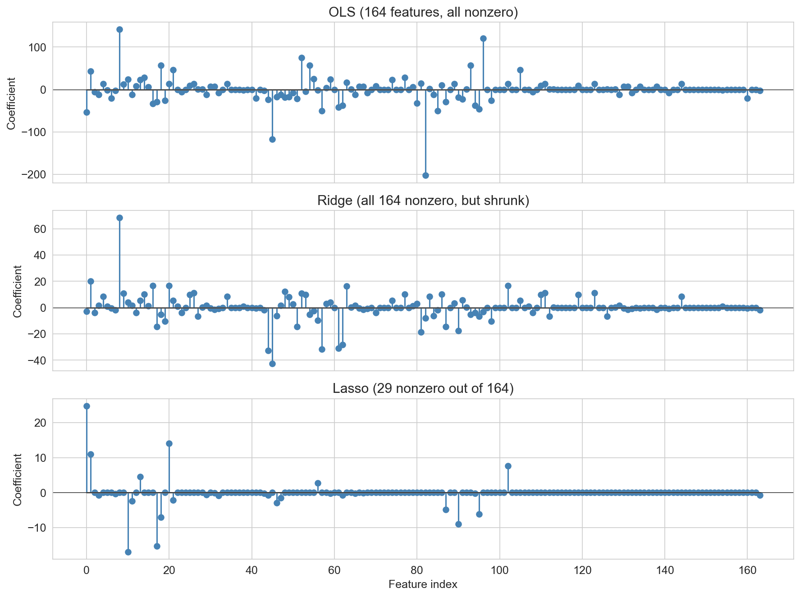
OLS · all 164 features
test \(R^2\) = 0.39
ridge · all 164, shrunk
test \(R^2\) = 0.44
lasso · 29 out of 164
test \(R^2\) = 0.52
The key visual comparison. 164 degree-3 polynomial features (standardized), 1,500-listing subsample. Each panel has its own y-scale — because OLS coefficients span several hundred while Lasso sits well under twenty, forcing them onto the same axis would make Ridge and Lasso look flat. Read top to bottom: OLS has all 164 nonzero, huge swings, chasing noise (test R² = 0.39, the worst of the three). Ridge has all 164 nonzero but shrunk by roughly an order of magnitude (test R² = 0.44). Lasso has most coefficients exactly zero, only 29 survivors (test R² = 0.52, the best). OLS has the highest training R² (0.61) but the worst test R² (0.39) — the overfitting signal we learned to read earlier. “Ridge says every feature contributes a little; Lasso says only a few features carry the signal.” Don’t give away the interpretation discussion on the next slide — let students interpret the stem plots themselves.
interpret the stem plot
you’re deploying an airbnb price suggestion tool — which model do you ship?
which is most interpretable for explaining a quoted price?
hosts self-report their listing — which needs the fewest inputs to deploy?
a host mistypes bedrooms as “66” — which model’s prediction is most distorted ?
many polynomial features are correlated — which model handles that best?
DISCUSSION: Interpret and decide (4 min) Format: 45 sec think, 2 min pair-share, 1 min full-room share. Walk through each question only if students get stuck — the discussion is the point, the “right” answer is secondary.
Interpretability: Lasso is the clear winner — 29 nonzero coefficients you can read off a page and explain to a host. Ridge keeps all 164, much harder to justify a specific quote. OLS is numerically unstable and practically opaque.
Fewest inputs: Lasso again — the deployed service only has to collect the 29 features Lasso kept. Ridge still “uses” all 164 (every coefficient is nonzero), even though they’re shrunk — so at prediction time you need all 164 inputs. Practical consequence: lasso means a much shorter form for hosts.
Outlier on one feature (data entry error): Ridge is more robust. If a host types “66 bedrooms” by accident, the effect on the prediction depends on the coefficient on that feature. Lasso has a big coefficient on bedrooms (one of its few survivors), so a single typo can move the predicted price dramatically. Ridge spreads weight across many correlated features, so any single typo has less individual impact. This is the tradeoff for sparsity: fewer features means each one matters more.
Correlated features: Ridge handles multicollinearity more gracefully — it shares weight among correlated features. Lasso can flip between correlated features unstably (pick one, drop the rest), which is unsettling when correlated features all carry real signal. Polynomial features (bedrooms, bedrooms², bedrooms³) are highly correlated, so Ridge’s behavior is often more predictable across resamples.
Big picture — there is no universally right answer. The choice depends on what matters for this deployment : interpretability, cost of data collection, robustness to noisy inputs, stability across resamples. This is the taste question at the heart of applied modeling — the model’s test R² is only one input to the decision.
which features did lasso keep?
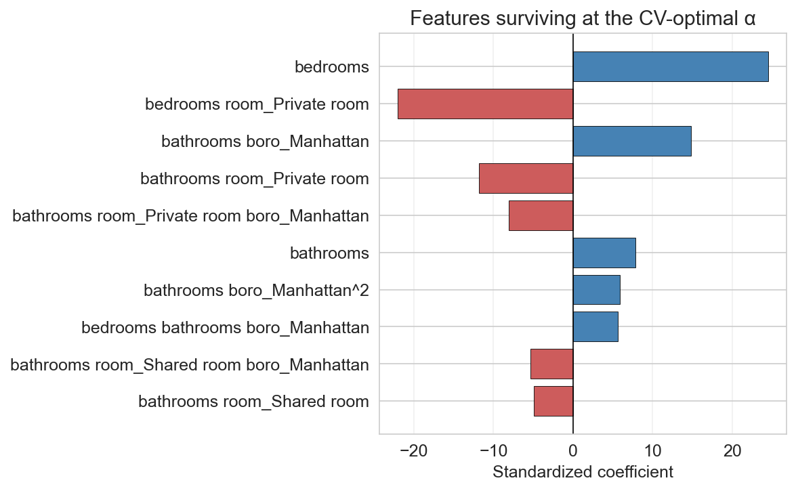
top 10 survivors at the CV-optimal \(\alpha\) — bedrooms, room type, borough, a few interactions
The payoff: because we gave PolynomialFeatures human-readable column names, we can see exactly which features lasso kept. Horizontal bar chart, top 10 survivors ranked by |coefficient|. Blue bars are positive effects, red are negative. The surviving features are a readable, targeted subset — bedrooms, room-type and borough dummies, a handful of interaction terms — exactly the kinds of features a human modeler might pick, but chosen automatically. Lasso decided these matter most and threw away the rest. This is what “automatic feature selection” actually looks like in practice.
designing a diagnostic panel for type-2 diabetes
a hospital wants to screen patients for early type-2 diabetes using a single blood draw .
the lab has 200 candidate markers (glucose, A1C, insulin, inflammatory proteins, lipid fractions, …) in their historical dataset — every one has been measured on 5,000 previously-diagnosed patients .
but the screening panel that actually gets used in clinic can only test 5 markers — budget, turnaround time, and patient tolerance all limit the size of the panel.
your job : pick the 5 markers and train the model. OLS, ridge, or lasso?
what to consider:
the deployment constraint — 5 inputs, not 200
interpretability — clinicians will ask “why did you flag this patient?”correlation — many markers move together (metabolic cascades)what happens if a clinician mistypes a glucose reading?
discussion format: 60 sec think · 2 min pair · 1 min room share
DISCUSSION: Design challenge (5 min)
The rewrite is longer on purpose. The old version asked a one-sentence question with four candidate answers, which is closer to a poll than a discussion — the “right” answer (lasso) was obvious from context, and there was nothing to chew on. The rewrite builds a real scenario: 200 markers → 5 in the deployed panel, 5,000 labeled patients, clinician-facing decision.
What makes this discussable: - Lasso is the first-pass answer (zeroes 195 features, gives you 5 to deploy). - But : polynomial/correlated features (inflammatory markers often move together) mean lasso can pick unstable representatives — “pick one, drop the correlated rest” is a real failure mode. Ridge keeps all 200 with small weights, which is wrong for deployment because you still need to measure all 200. - Hybrid answers are fair game: use lasso to shortlist, then refit OLS on just those 5 for interpretability; or use lasso with a slightly larger α to force sparsity even at the cost of a bit of test R². - Typo robustness : a single-feature outlier hurts lasso more than ridge (lasso’s 5 features each carry a lot of weight; ridge spreads the load), but only if you keep ridge’s 200 features — which you can’t.
The interesting class discussion point: lasso is the only one of the three that gives you what the deployment constraint demands, so the question isn’t “which algorithm” but “how do we use lasso well ” — α tuning, how to pick the specific 5 markers, how to validate the panel after selection. Walk the room through these before revealing.
If students stall, lead with the concrete question: “Ridge gave you a model with test R² = 0.44 using all 200 markers. Can you ship it?” (No — you’d need to measure 200 markers per patient. That’s the constraint talking.)
the coefficient path
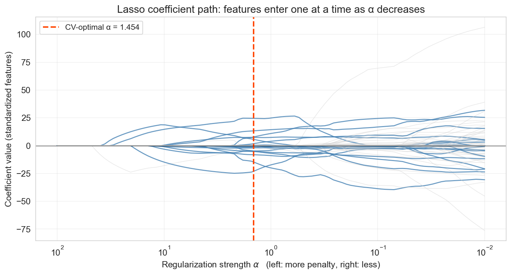
left: large α, everything zero · right: small α, approaches OLS
as α decreases, features enter the model one at a time
The stem plots were snapshots at one α. This is the movie: every curve is one feature’s coefficient as we sweep α from very large (left — penalty so strong that every coefficient is zero) toward small (right — approaches OLS). Read left to right (the natural viewing order): at large α everything is zero, then features enter the model one at a time as the penalty eases. The red dashed line marks the α chosen by cross-validation — the features in blue are the ones Lasso keeps at that setting, and the gray lines are features that appear on the path but are zeroed at the optimum. This is the single clearest visualization of what Lasso does — not the algebra, but the actual selection process.
standardize before regularizing
the penalty \(\alpha \sum_j |\beta_j|\) treats every coefficient on the same scale
but raw features live on wildly different scales :
bedrooms: std ≈ 0.7 → coefficient ≈ 30
number_of_reviews: std ≈ 35 → coefficient ≈ 0.02
same penalty \(\alpha |\beta_j|\) , but one coefficient is 1000× bigger — purely from units
\[\tilde{x}_j = \frac{x_j - \bar{x}_j}{s_j} \qquad \text{compute } \bar{x}_j, s_j \text{ on \textbf{train only}; apply to both train and test}\]
Standardization is the most common production-readiness step for lasso and ridge. Without it, features with small raw scales get coefficients that are inflated purely by units, and the L1/L2 penalty punishes them disproportionately. After standardization every coefficient is in the same units ($ per standard deviation). Note the “fit scaler on train, transform both” rule — this is the first of several don’t-leak rules that recur throughout the course (the second will appear in classification). OLS is scale-invariant, but lasso and ridge are not.
raw vs standardized lasso: same data, different story
bedrooms
0.66
52.21
34.78
bathrooms
0.42
0.33
1.54
number_of_reviews
34.52
−0.02
0
minimum_nights
8.98
−0.15
−0.38
availability_365
133.58
0.01
0
test \(R^2\) : 0.151 vs 0.152 — essentially identical
but the raw lasso keeps two features that are just noise — standardized correctly drops them
Same lasso, same α, same data — raw and standardized disagree on which features matter. Raw lasso keeps large-range features for free because their coefficients slide under the α penalty; standardized lasso puts every feature on the same footing and zeros out the noise. Test R² is essentially identical, but the selection differs — and when the whole point of lasso is “which features matter,” selection is exactly what you came for. Moral: always standardize numeric features before lasso or ridge.
going deeper: why L1 zeros coefficients
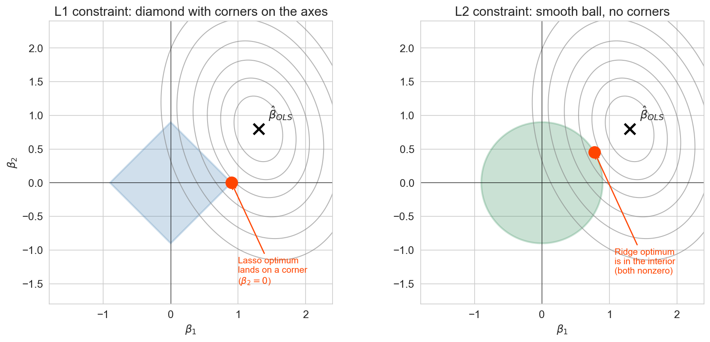
2D illustration (\(\beta_1\) , \(\beta_2\) ): L1 diamond has corners on the axes → tangency hits a corner → sparsity
Optional deep-dive slide (collapsible in the chapter — keep or skip based on pacing). The geometric picture. Gray ellipses are OLS squared-error contours around the unconstrained optimum (marked ✕). Lasso / Ridge = “find the smallest contour that still touches the constraint region.” Left (L1 / Lasso) : the constraint region is a diamond with sharp corners on the axes. The smallest contour that touches the diamond almost always hits it at a corner — and a corner means one coefficient is exactly zero. That’s where Lasso’s sparsity comes from geometrically. Right (L2 / Ridge) : the constraint region is a smooth ball, no corners, so the tangency point is almost always in the interior of an edge, with both coefficients nonzero. The difference between a diamond and a ball is the difference between Lasso and Ridge. Students who won’t care about the geometry can skip this — the behavior is already nailed down by the stem plots and the coefficient path. Use this slide only if you have time and your audience is mathematically curious.
choosing α by cross-validation
how do we pick the right penalty strength?
LassoCV: fit lasso at many \(\alpha\) values, score each by 5-fold CV
LassoCV automates the alpha search (standardized features). The U-shaped curve confirms the bias-variance tradeoff one more time: too-small alpha (left side) = not enough regularization = overfitting. Too-large alpha (right side) = too much regularization = underfitting. The valley is the sweet spot.
recommended workflow
hold out test set at the start (20% default)pick a model family + hyperparameter gridcross-validate on the rest to choose hyperparametersrefit the best on all non-test datascore once on the test set — never touch it again report with uncertainty (CV fold std, or bootstrap CI — ch 8)
Q: what if you run step 5 twice? → the second score is contaminated
The procedure in six steps. Reveal incrementally. The one thing that matters most: step 5 — the test set is touched exactly once, at the end. Everything else is adjustable by dataset size, which is the next slide.
same procedure, three sizes
small (~150)20% (even if noisy)
LOO-CV on the rest
wide bootstrap CI is honest
medium (~1,500)20%
5-fold CV on the rest
the Airbnb case
large (100k+)20% (or fixed 10%)
single train/val split ok
OLS baseline is often enough
the shape of the procedure doesn’t change — only the details
The three-case table maps the workflow onto dataset sizes. Small n: LOO lets every fit see n-1 rows, which matters when you can’t spare 20% for validation. Medium n: 5-fold CV on the training 80% is the workhorse — this is the Airbnb case. Large n: each piece is big enough that a single split suffices for the hyperparameter search, and regularization is less critical because overfitting is harder with abundant data. The through-line — test once, refit on non-test, report with uncertainty — doesn’t change.
which of these claims is wrong ?
A. training R² always increases with more features
B. test R² always increases with more features
C. the \(R^2\) reported by cross-validation can be negative
D. lasso sets some coefficients to exactly zero
30 seconds: pick one
raise your hand: A? B? C? D?
DISCUSSION: Poll (2 min) Prompt: “Which claim is wrong? A/B/C/D” If stuck: “Think about the feature experiment. Did test R² always go up?” Key insight: B is wrong. Training R² always increases (or stays the same) for OLS on nested feature sets. Test R² can decrease — that’s the whole point of this lecture. Cross-validation CAN produce negative R² scores (if the model is terrible on held-out folds). Lasso does set coefficients to exactly zero (L1 penalty property).
what we still can’t answer
will the model survive distribution shift at deployment? → chapter 16
is any individual coefficient significant ? → chapter 12
does a feature cause higher prices? → chapter 18
can we capture nonlinear structure polynomials miss? → chapter 13
CV checks generalization — within distribution . that’s not everything.
The four limits of CV, matching the chapter’s “What we still can’t answer” section. Each bullet previews a later chapter. (1) CV holds out observations that look like training — it cannot detect covariate, temporal, or label shift between now and deployment. Chapter 16 returns to this with temporal validation. (2) CV picks the model that generalizes best but doesn’t quantify uncertainty on any individual coefficient — that’s the inference tooling in Chapter 12. (3) Everything in this chapter is still association — a Manhattan effect measured by CV tells us where prices are higher, not why. Chapter 18 separates association from causation. (4) Polynomials let lines bend smoothly, but real relationships can have sharp thresholds and rich interactions — Chapter 13 introduces trees and forests for those. This is the forward-pointers slide matching the Chapter 5 pattern.
summary
train/test split : hold out data for honest evaluationbias-variance : simple models underfit, complex ones overfittrain/validate/test : selection decisions contaminate a test set — use a separate validation foldcross-validation : reduces estimate variance — use it when you need to compare modelsstandardize then regularize : lasso zeros features, ridge shrinks them
Revisit the agenda. Each bullet maps to a content block and states the key insight. Pause on bias-variance — it’s the conceptual backbone of the lecture.
next time
so far every outcome has been a number (price, score, count)
what if the outcome is a category ? (spam/not spam, disease/healthy)
chapter 7: classification
Forward pointer. We move from regression (predicting numbers) to classification (predicting categories). Logistic regression, precision, recall, ROC curves. The validation and regularization tools from today carry over directly.
one-minute feedback
what was the most useful thing you learned today?
what was the most confusing?
give feedback